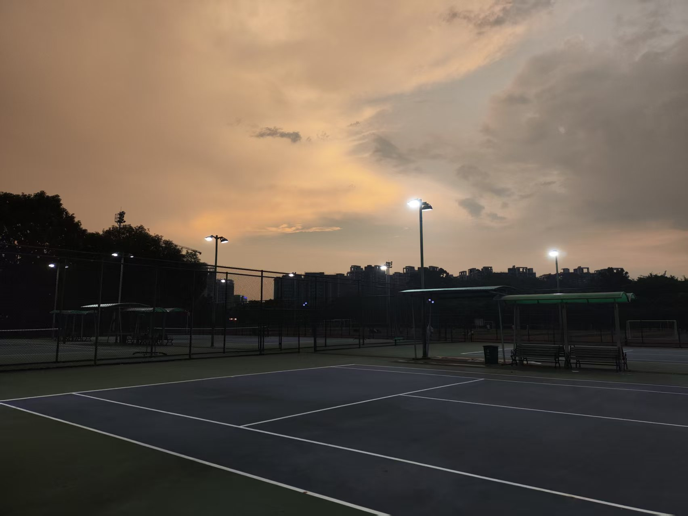
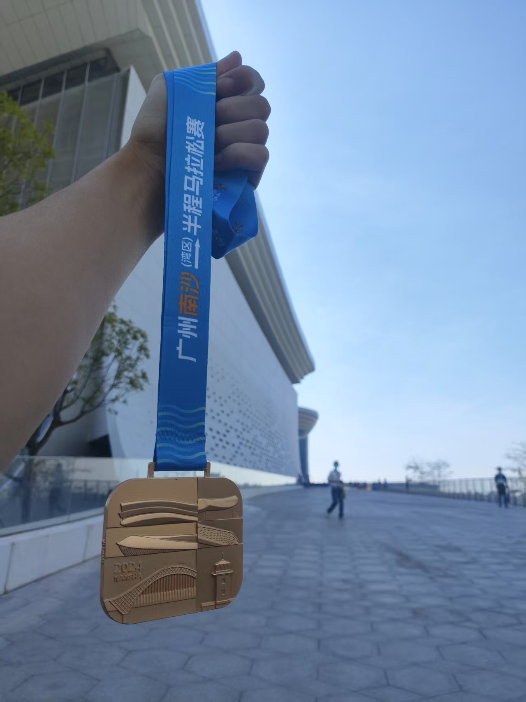

Life Beyond Research
City Walks & Urban Exploration
I’ve explored the streets and alleys of Guangzhou, Shenzhen, and Hong Kong, becoming familiar with local cultures and urban development. My explorations also extended to Beijing, Chongqing, Singapore, and beyond—walking through Singapore’s heritage houses to understand the history of the Housing Development Board, or visiting Tin Shui Wai, Hong Kong’s largest public housing community, to learn about new town development and construction.

Each urban journey is like reading a three-dimensional history book of the city. From architectural styles to street layouts, from commercial arrangements to residents’ daily lives, you can experience the patterns of urban planning and development.
I welcome anyone interested to join weekend road trips and explorations!
Sports & Outdoor Activities
I’m passionate about various sports including tennis, hiking, and long-distance running.
Tennis
Currently at NTRP 2.5 level, I’m working to improve my technique. Looking for experienced players to practice with!

Hiking
I’ve conquered several mountains in Greater Bay Area, like Wutong Mountain, Meisha Peak, Meilin Mountain and so on. The MacLehose Trail left the deepest impression on me—I’ve tried three times, each visit revealing new scenery and experiences. I’ve hiked sections 1, 2, and 10, and each journey has offered something unique.
Running
I regularly participate in running training and have completed multiple half-marathons. Look for a daily running partner~

Economic Observations
I am also curious about macroeconomic development trends, such as:
- The critical role of land finance and fixed asset investment in China’s rapid economic development over the past decades
- How financial innovation accelerates investment and financing efficiency while simultaneously increasing system fragility and potential risks
- Economic structural transformation and sustainability issues in the process of urbanization
I’m not an economics researcher (maybe?), but I think economics really helps make sense of the world. I often find myself noticing and reflecting on economic patterns in everyday life—it keeps me sharp and curious.
Let’s Explore Together
Whether it’s urban walks, sports challenges, economic/finance/business observations, or other intellectual exchange, I look forward to sharing and exploring with like-minded friends. If you’re interested in any of the above topics or have other ideas you’d like to discuss, feel free to contact me.
Life is not just about research and work, but a continuous journey of exploration and discovery. Let’s learn, grow, and create value together on this journey!